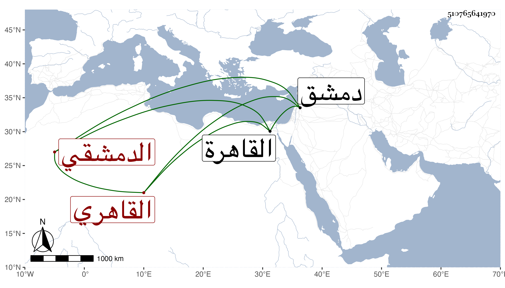

0902Sakhawi.DawLamic.ITO20230111-ara1.EIS1600.510765641970
Biography ID: 510765641970
455
محمد الدمشقي ثم القاهري ويعرف أولا بالأقباعي ثم بالإسطنبولي لكونها وهي الحبك ونحوه كانت حرفته بل كان أيضا بيبع النشا ويسقي بالقربة . ولد في سنة اثنتين أو ثلاث وثمانمائة بدمشق . وأخذ فيها التصوف عن البدر الأساطيري الحلبي والشمس الجرادقي والشيخ محمد المغربي الكشكشاني واختص فيما قيل بالبلاطنسي وحج في سنة سبع وخمسين صحبته ، وقدم القاهرة في سنة أربع وستين أو التي قبلها فتردد للخطيب أبي الفضل النويري وإمام الكاملية وزكريا فأظهروا اعتقاده والتردد إليه ونوه أولهم به فاشتهر وعظم اعتقاد الناس فيه وصارت له سوق نافقة عند الشرف الأنصاري وغيره ، وقرر له على الجوالي المصرية والشامية وكان حريصا على الجماعات نيرا أنسا عاقلا خفيف الروح راغبا في الفائدة سألني مرة عن بعض الأحاديث التي أنكر عليه صاحبه يحيى البكري عزوه للبخاري فصوبت مقاله فسر . مات في ليلة الجمعة خامس ذي الحجة سنة ثمان وسبعين فغسل ليلا وصلي عليه بعد صلاة الصبح بالأزهر ودفن بتربة الأنصاري رحمه الله وإيانا .
